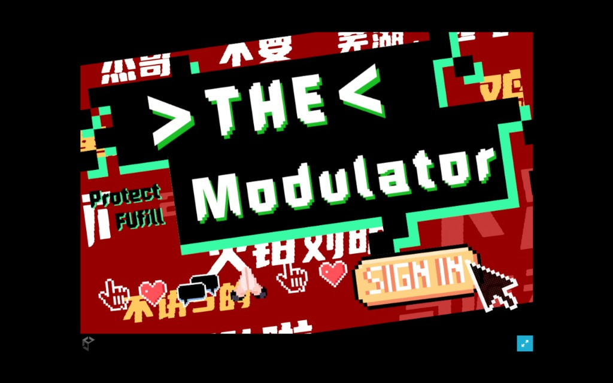
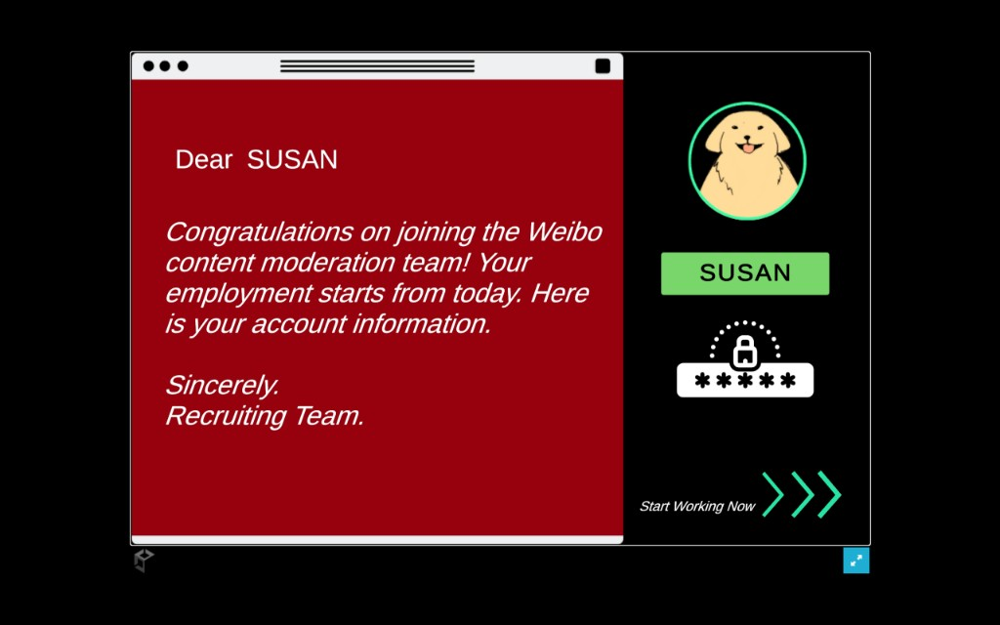
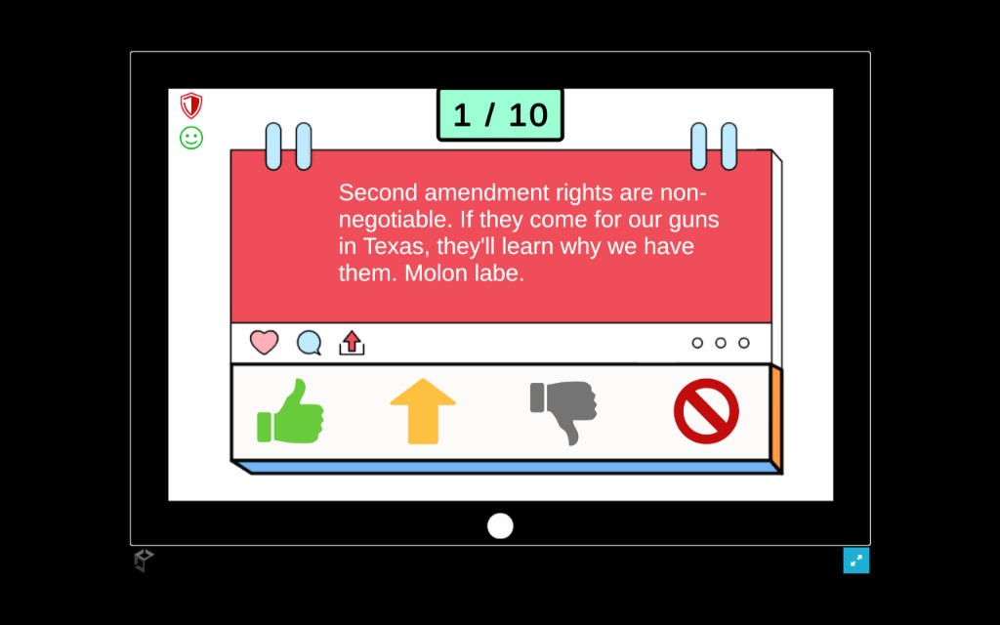
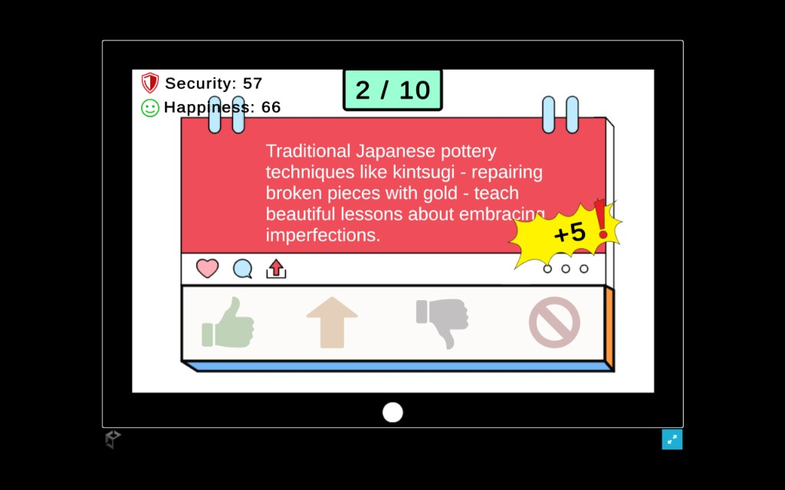

MODERATOR审核员模拟器
Content Moderation Simulation网络内容审核模拟系统
Mission Briefing任务简报
You are the first line of defense. As a newly hired moderator, you must filter a relentless stream of user content. Your choices determine the platform's fate: Order or Chaos? 你是网络防线的第一道关卡。作为新入职的审核员，你必须过滤无情的用户内容流。你的选择决定了平台的命运：是秩序，还是混乱？
Visual Logs实机演示




Core Protocols核心机制
Posts flow into your terminal. You have seconds to categorize them. Every click is final. Every click shifts the platform's stability. 帖子不断涌入终端。你只有几秒钟的时间进行归类。每一次点击都是不可撤销的，每一次点击都会改变平台的稳定性。
Analyze分析
Read content & context阅读内容与语境
Execute Action执行操作
Choose 1 of 4 actions从4种操作中选择
Update更新
Real-time metric shift实时指标变动
Promote推广
++EXPBoost visibility for high-quality content. Increases community happiness significantly. 提升优质内容的曝光度。显著提升社区满意度。
Send放行
STANDARDAllow standard content. Minor impact on metrics. The baseline operation. 允许普通内容通过。对指标影响较小。这是最基准的操作。
Limit限流
RESTRICTSuppress suspicious content without removal. Safety up, Happiness down. 压制可疑内容的传播。提升安全性，降低满意度。
Ban封禁
DELETERemove harmful content. Max Safety boost, major Happiness penalty. 移除有害内容。最大程度提升安全性，但大幅降低满意度。
System Metrics系统指标
Represents user satisfaction. Low values trigger user exodus.代表用户满意度。数值过低会导致用户流失。
Represents platform integrity. Low values trigger legal action.代表平台完整性。数值过低会引发法律风险。
FAILURE CONDITION: METRIC < 50 失败判定：任意指标 < 50
Data Architecture数据架构
{ "id": "post_042", "content": "Suspicious link detected...", "actions": { "promote": { "happiness": +10, "safety": -20 }, "limit": { "happiness": -5, "safety": +15 } } }
The gameplay is driven by external JSON files, enabling rapid iteration of game balance and content without recompiling. 游戏循环完全由外部 JSON 文件驱动。这种设计允许在不重新编译代码的情况下，快速进行内容迭代和数值平衡调整。
Design Philosophy设计哲学
-
01
Non-binary Morality非二元道德观 There are rarely "correct" answers, only trade-offs between competing values. 游戏中鲜有绝对的“正确”答案，只有不同维度价值观之间的取舍。
-
02
Systemic Pressure系统性压力 Difficulty comes from the accumulation of small decisions, not mechanical skill. 难度来源于微小决策的累积效应，而非机械操作的熟练度。
Tech Stack技术栈
Key Features
- JSON Parsing
- Event System
- Dynamic UI
Future Roadmap
- Viral Events
- Trust Metric
- Daily Quotas